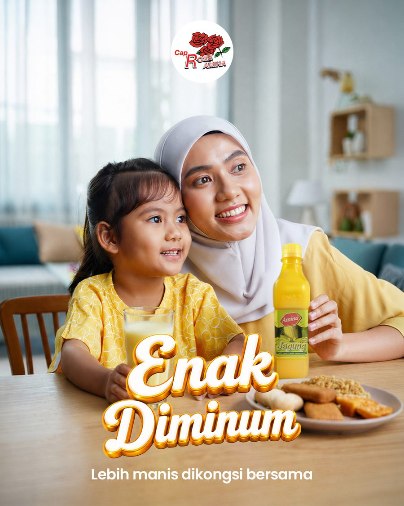
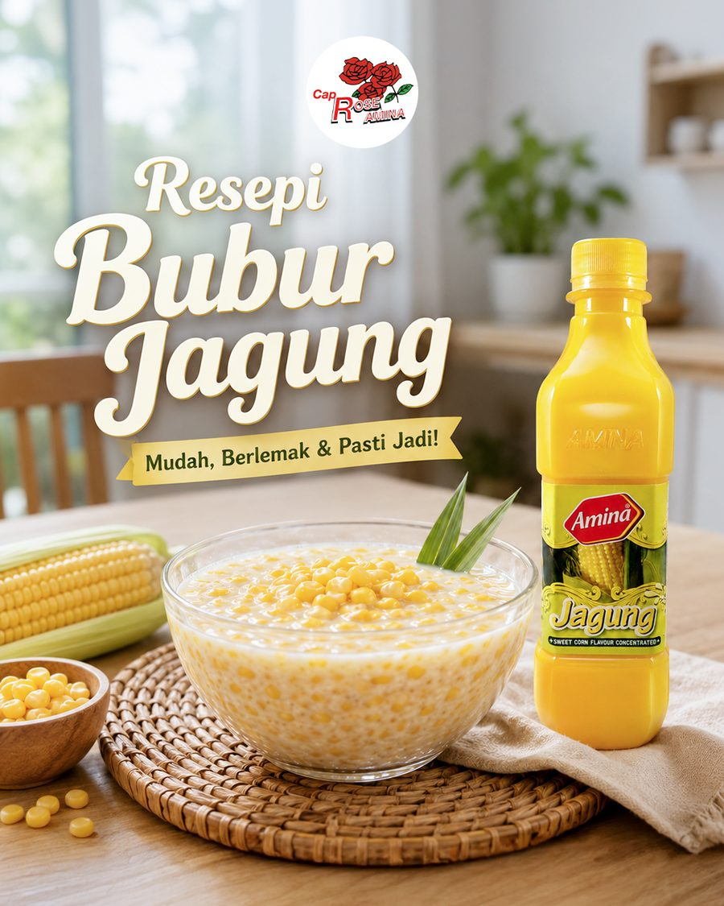

Client Case Study · Amina Rose
Everyone's Favourite Cordial.
A sweet corn flavoured cordial that is equal parts refreshing drink and cooking base.

A sweet corn flavoured cordial that is equal parts refreshing drink and cooking base.
Cap Rose's Amina Jagung is an everyday Malaysian staple. For the July 2026 campaign, Kordial Kegemaran Ramai, I shaped social content that showed both sides of the product: a bright jagung cooler, warm family moments, and a comforting bowl of bubur jagung, positioning it as premium and crave worthy.

